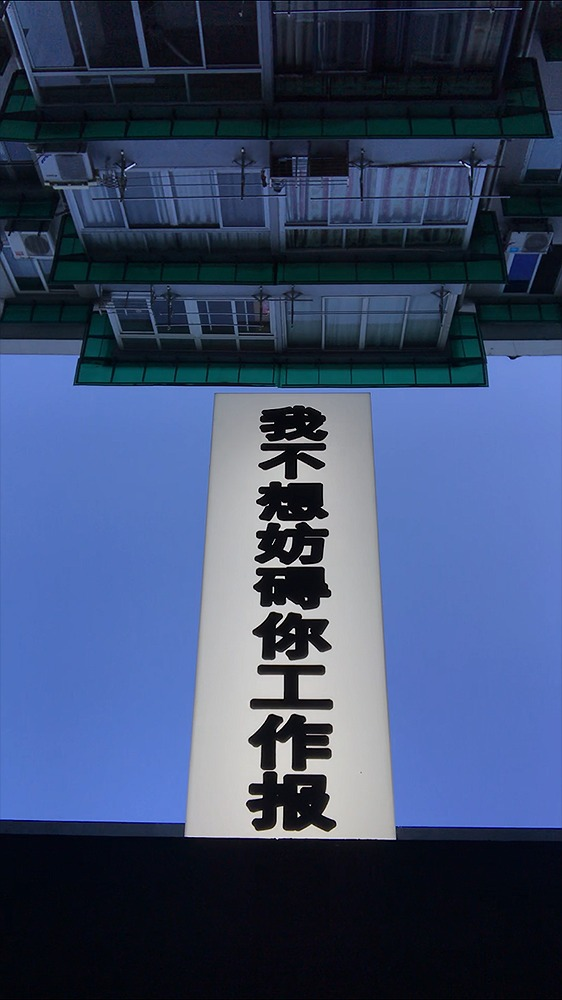

My art practice
wbxfangzb


My art practice is formative to my collaborative, experimental and context-based design approach. I co-founded art collective wbxfangzb after doing my undergraduate in Intermedia Art. Based in Hangzhou, China, the collective focus on the very collaboration between the four members, exploring everyday visuals and live experiences. The book wbxfangzb showcases and advocates for our approach. It looks back on our past six years of practice, sharing our current self-understanding with utmost candidness.